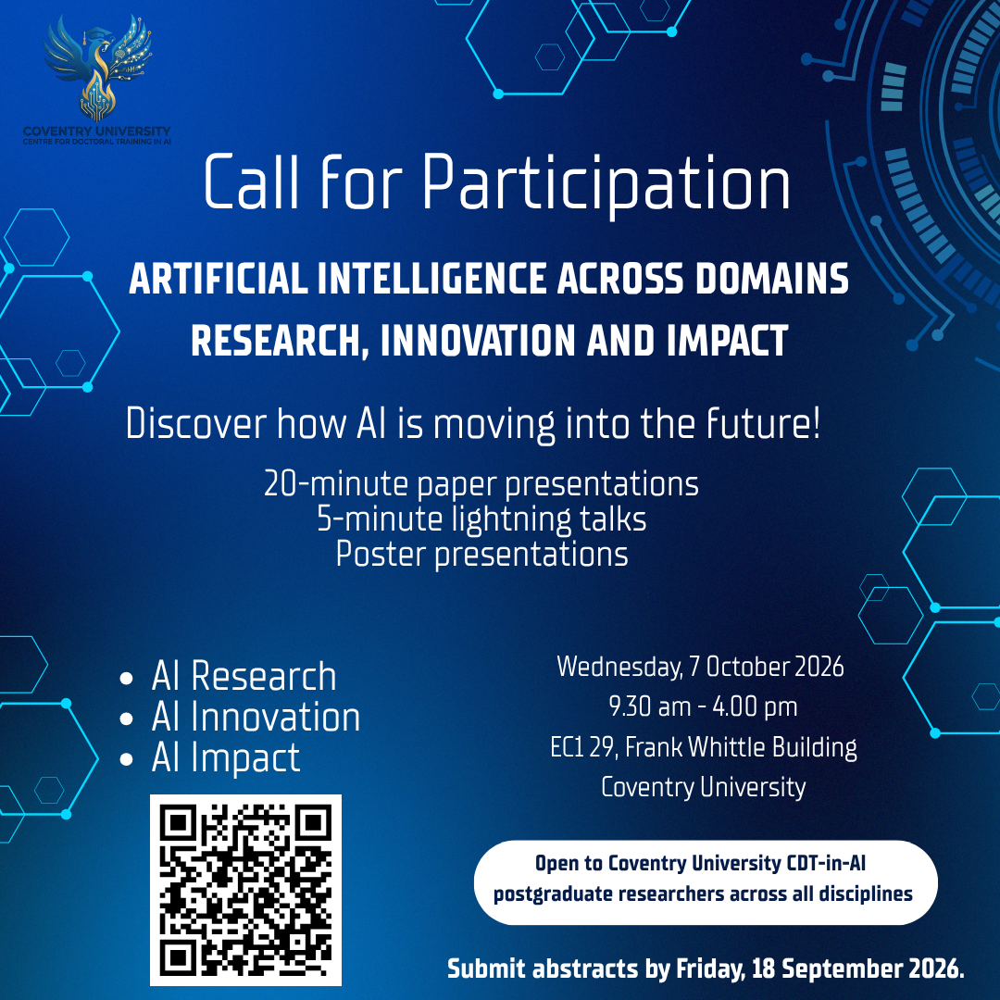

About the conference
The CDT in AI Annual Conference 2026, Artificial Intelligence across Domains: Research, Innovation and Impact, is a one-day conference showcasing the diverse research being undertaken by postgraduate researchers within Coventry University whose work engages with artificial intelligence.
It takes place on Wednesday 7 October 2026 in EC1 29, Sir Frank Whittle Building, Coventry University. Participation is open to Coventry University CDT in AI postgraduate researchers across all disciplines. All CDT in AI students are expected to attend and to contribute.
Topics
Submissions are welcome in any area where AI plays a part. Please select one of the four topics on EasyChair:
- AI Research, Innovation, Methods, Models and Applications
- AI across Disciplines and Professional Contexts
- Responsible AI: Ethics, Governance, Transparency, Bias and Trust
- Generative AI: Knowledge, Human Experience and Societal Impact
Important dates
- Abstract registration and submission deadline
Friday, via EasyChair - Notification of outcome
Authors informed by email - Conference day
09:00 – 16:30, EC1 29, Sir Frank Whittle Building
Formats
Presentation formats
Choose the format that best suits the stage of your work. Session chairs will keep time, and speakers should load their slides during the preceding break.
Paper presentation
Full-length talks in the midday and afternoon panels (Panel 1 at 11:15 and Panel 2 at 14:00), each followed by Q&A. Suited to mature work with results.
Lightning talk
Short, focused talks in two blocks (12:30 and 15:15) with Q&A. Well suited to work in its early stages or a single key idea.
Poster presentation
On display from lunch (13:00) through the closing session, with authors alongside. Poster awards are presented at 15:45. All first-year CDT in AI students present a poster.
How to submit
- Go to the EasyChair submission page and sign in or create a free EasyChair account.
- Enter your abstract (250 words maximum) and a short biography (100 words maximum).
- Select your preferred format: paper presentation, lightning talk or poster.
- Select one of the four topics.
- Submit before Friday 18 September 2026. You can edit your submission on EasyChair until the deadline.
Suggestions for the second keynote speaker are welcome and can be sent alongside your abstract submission.
Review and selection
Every abstract is reviewed by members of the CDT in AI community against the published review criteria: relevance, clarity, rigour, originality and impact. Authors are notified of the outcome, and of their allocated format and session, by 25 September 2026.
There are twelve presentation slots in total: six 20-minute paper presentations and six 5-minute lightning talks, plus the poster exhibition. Where demand exceeds the slots available, the committee may offer an alternative format.
Want to help review? See the call for reviewers.
{kind=link}

Share the call
Call for Participation poster
Download and share the poster with colleagues in your research centre. The QR code links to the EasyChair submission page.